ステレオプラグ（6.3mm）のコンデンサー型
コンデンサー型ヘッドフォンが主流とならなかった原因の一つは、専用のアダプターボックスを必要としたことでした。
コンデンサー型ヘッドフォンはその動作原理から音楽信号を高電圧で与える必要があります。アンプやＣＤプレーヤーのヘッドフォン・ジャックからの信号では電圧が足りませんので、何らかの方法で昇圧する必要があります。音質をなるべく損なわないようにする為の簡単な手段として、大電力の低圧信号を小電力の高圧信号にする方式が選ばれ、パワーアンプまたはプリメインアンプのスピーカー端子に専用のアダプターボックスを接続するのが一般的でした。
さらに現在のスタックスが採用しているような純コンデンサー型（エレクトロ・スタティック型）では、震動膜と電極にも高圧電流（バイアス電流）を供給する必要があった為、さらに大げさになってしまいます。
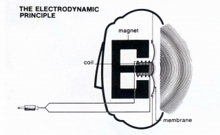 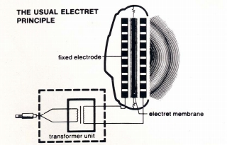 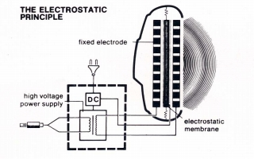
(左から、ダイナミック型ヘッドフォン、エレクトレット・コンデンサー型、純コンデンサー型の動作原理図）
今のヘッドフォン・オーディオでたとえれば、ヘッドホン1台について、それぞれ専用のヘッドフォン・アンプが必要となると考えてもらえれば、わかりやすいと思います。現在であれば単体のヘッドフォンアンプを使用している方も多くなってきましたが、少数の例外を除けば、ダイナミック型ヘッドフォンを専用アンプでドライブするという発想は、GRADOのHP-1000やAKGのK-1000あたりからで1990年代からのことですし、ある程度一般化したのは2000年以降のことです。それを考えれば、コンデンサー型が最も多かった1970年代中盤〜後半では、いかに普及の妨げになるか十分想像できます。ましてメーカごとに規格の違う複数のコンデサー型ヘッドフォンを使うとなると・・・・
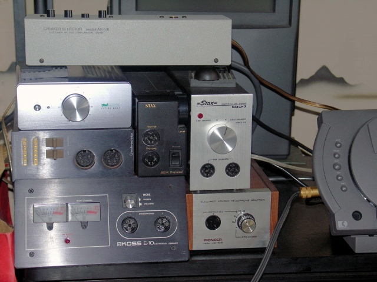
（管理人のサブシステム）
ところで、音楽信号を昇圧する手段として、当時一般的だったのがトランスを用いる方式でした。独立したアダプター・ボックス形態が一般的でしたが、もし小型で高能率のトランスを用意し、大げさなアダプターボックスをなくせば、コンデンサー型の普及に役立つと考えたメーカーがありました。特にバイアス電源回路を必要としないエレクトレット・コンデンサー型ではトランスと少数の補助部品で動作させられるので、ダイナミック型ヘッドホンと同じステレオプラグ（6.3mm）にすればいいと考えたのが「オーレックス」でした。
「オーレックス」は、�@ステレオプラグとトランスを合体させる、�Aヘッドホン本体にトランスを内蔵する、の二つの方法を試みました。他に、�Bコードの中間に小型のトランスを取り付けるも考えられます。
�@の機種 HR-710、HR-810、 HR-F1、HR-XI 、HR-810�U
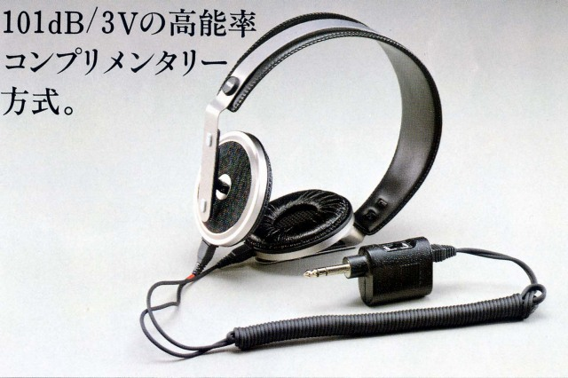 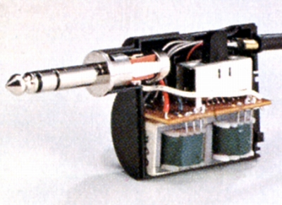
（左 HR-XI 右 HR-810のプラグ部分）
�Aの機種 HR-E7、HR-V5、HR-V7、HR-V9
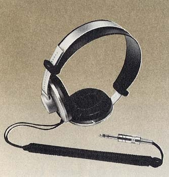 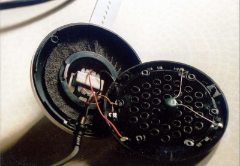
（HR-V7 右の写真が振動板背面に内蔵されたトランス ）
また、他社でも同様の試みの例があります。
�Bの方式と思われる機種 フィリップス N6325
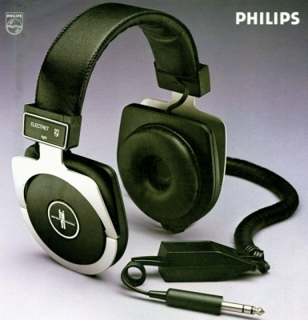
(注）かつてオーレックスのHR-E7を「�B」のタイプに分類しておりましたが、その後入手した資料で、本体内蔵タイプでコードの中間にあるのはインピーダンスの切替スイッチであることが、判明しました。（2014/10/19修正）
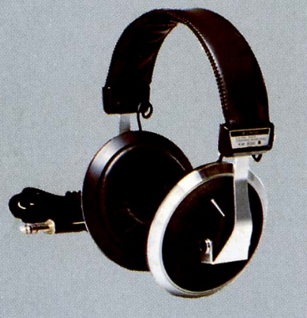 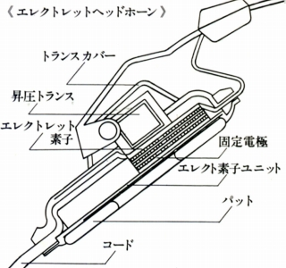
（KH-800とその構造図 ）
しかし、この方法にはやはり限界がありました。ヘッドフォン端子への負担が大きく、非常に音量が取りにくかったのです。音量だけを考えれば現在のようにヘッドホン・アンプがあれば、解決したかもしれませんが、ヘッドホン・アンプがある程度一般的になったのは2000年過ぎです。また完全には音質への影響は解決できなかったようです。その為か「オーレックス」自身の最高級機は、やはり外部のアダプターボックスを用いるものでした。
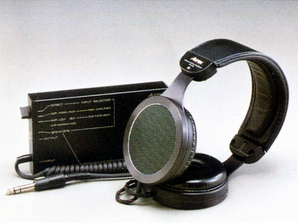
(初期の最高級機 HR-910)
以前、中野の某ショップが開催するイベントで、トリオKH-800が持ち込まれ評判になったことがあります。現在のスタックスと路線が違う、チェンバーを最小にした高域の解像度重視の音が珍重されているようですが、全面駆動ならではのさわやかな音質を気軽に楽しめる製品もあってもいいのではと思います。ヘッドフォンアンプへの負担も現在の単体の据え置き型のアンプでは対処可能な範囲です。まだコンデンサー型ヘッドフォンの研究を続けている（＊）「オーディオ・テクニカ」あたりに、こうしたステレオプラグ（6.3mm）のコンデンサー型を期待したいと思います。
＊ http://www.j-tokkyo.com/2006/H04R/JP2006-041569.shtml